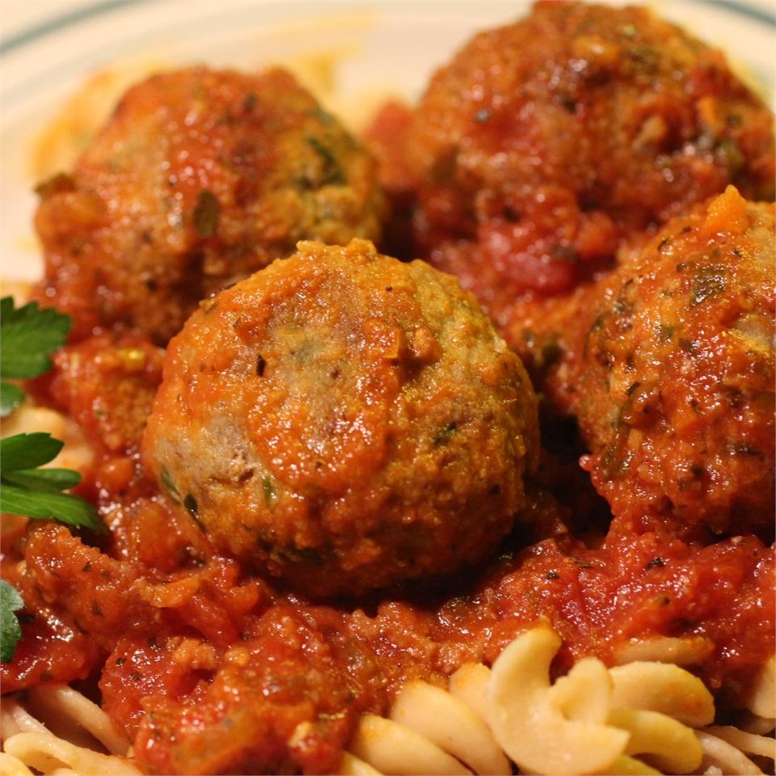

Spanish Style Albondigas in a Sunny Mediterranean Sauce

Who doesn't love albondigas!
The sunshine just shines on and on. A delight to the taste buds.
Ingredients
- ⅔ pound ground beef
- ⅓ pound ground pork
- 2 tablespoons minced green onion
- 2 tablespoons minced fresh oregano
- 1 tablespoon minced fresh flat-leaf parsley
- 1 clove garlic, minced
- 2 dashes Worcestershire sauce, or to taste
- salt and ground black pepper to taste
- 3 ½ ounces fresh white bread crumbs
- 2 tablespoons extra-virgin olive oil
- 3 ½ ounces pancetta, chopped
- 3 tablespoons minced onion
- 1 clove garlic, minced
- 2 tablespoons minced carrot
- 2 tablespoons minced celery
- 2 tablespoons minced red bell pepper
- 1 ½ teaspoons dried basil
- 1 ½ teaspoons dried oregano
- ¼ teaspoon ground coriander
- 2 grinds ground black pepper
- 1 cup white wine
- 2 tablespoons tomato puree
- 1 (28 ounce) can Italian plum tomatoes, chopped
- 2 tablespoons extra-virgin olive oil, or as needed
Directions
-
Mix ground beef, ground pork, green onion, oregano, parsley, garlic, Worcestershire sauce,
salt, and black pepper together in a bowl. Slowly add and mix breadcrumbs into meat mixture
to desired consistency. Form mixture into balls, roll them in remaining bread crumbs to coat,
and arrange onto a shallow tray. Cover meatballs with plastic wrap and refrigerate at least 30 minutes.
-
Heat 2 tablespoons olive oil in a large pot over medium heat. Cook and stir pancetta in the
hot oil until browned, about 4 minutes. Add onion and garlic to the pancetta; continue to cook and stir
until fragrant, about 1 minute. Stir carrot, celery, and red bell pepper into the pancetta mixture;
cook until the carrot softens slightly, about 3 minutes. Sprinkle basil, oregano, coriander,
and black pepper over pancetta mixture; stir to season evenly.
-
Pour wine over the pancetta mixture. Increase heat to medium-high and cook until the liquid reduces by about half.
-
Quickly stir tomato puree into pancetta mixture; add chopped tomatoes. Cook and stir
the mixture until the tomatoes begin to break down into a sauce, about 5 minutes.
Reduce heat to low and simmer until the sauce thickens, 60 to 90 minutes.
- Heat 2 tablespoons oil in a large skillet over low heat. Cook and stir meatballs in
batches in hot oil until evenly browned and cooked through, 5 to 7 minutes; drain on a plate
lined with paper towel.
- Gently drop meatballs into the simmering sauce; cook together until meatballs are heated through, about 10 minutes.